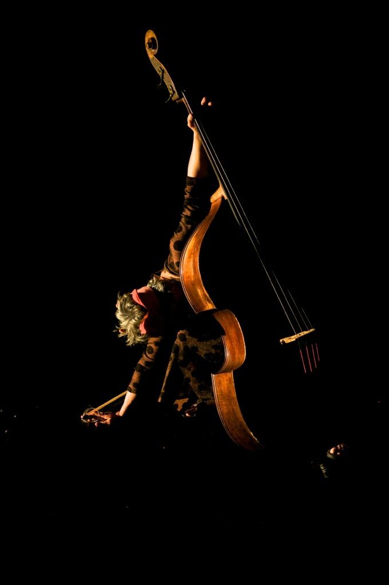
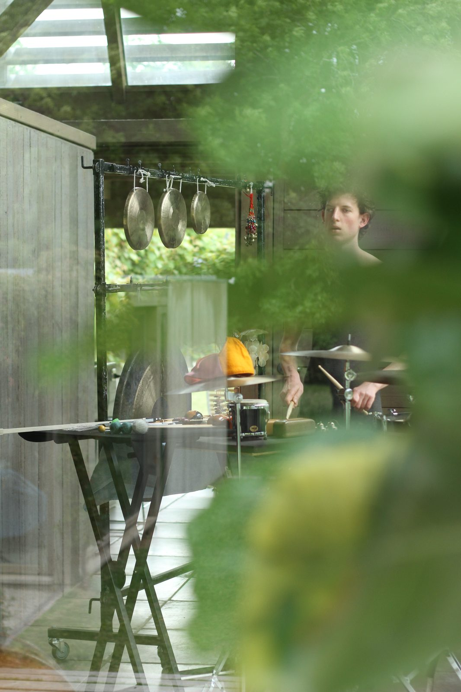

The Art of War
The Art of War is a composition for double bass and percussion, written for Mark Cauvin and Matthias Schack-Arnott. The movement titles draw from Sun Tzu's ancient military treatise; the score was rendered as a series of miniature watercolours, maps for the musicians to navigate with.
The score has been lost. The recording survives.
· · ·

Mark Cauvin. Photograph: Pia Johnson
· · ·
Recording — excerpts
· · ·
Recording — full version
· · ·
Movements
1. Strike with chaos — for percussion
2. Exploit the disarray — for double bass and percussion
3. Attack strategy itself — for double bass
4. Like pent-up water — for percussion
5. Like round boulders — for percussion
6. No constant dynamic — for double bass and percussion
7. Into the fray — for double bass
8. On death terrain — for percussion
9. Birds rising in flight — for double bass
10. Flight, impotence, decay, collapse, chaos, rout — for double bass and percussion
11. Plunder — for double bass
12. Move if there is gain — for percussion
13. The mysterious skein — for double bass and percussion

Matthias Schack-Arnott. Photograph: Pia Johnson
· · ·
The composition was written for and performed as part of Captives of the City, a Chamber Made Opera production. Full production credits — direction, design, cast — are documented at the link above.
· · ·
Credits
Composer David Young
Bass Mark Cauvin
Percussion Matthias Schack-Arnott
Commissioned and premiered by Chamber Made Opera
Bass Mark Cauvin
Percussion Matthias Schack-Arnott
Commissioned and premiered by Chamber Made Opera